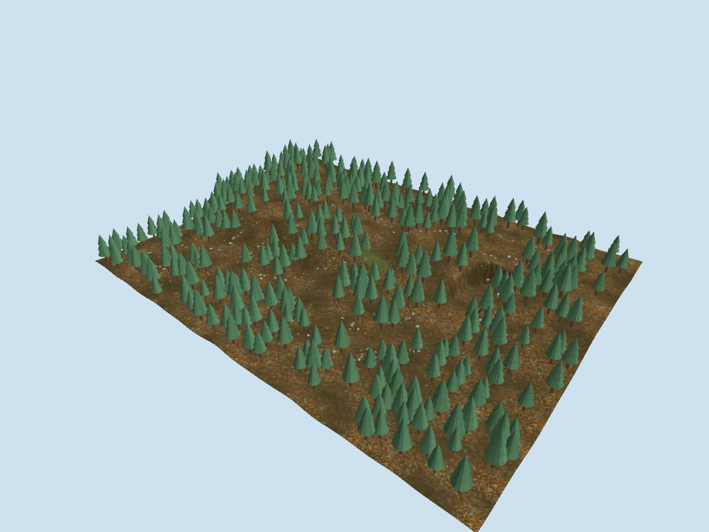
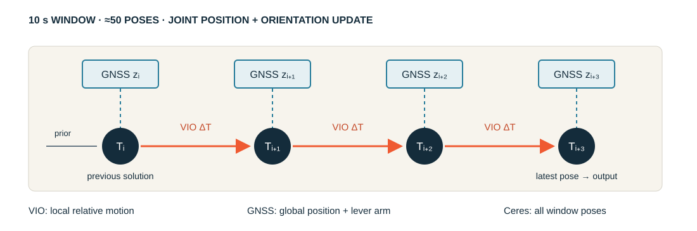
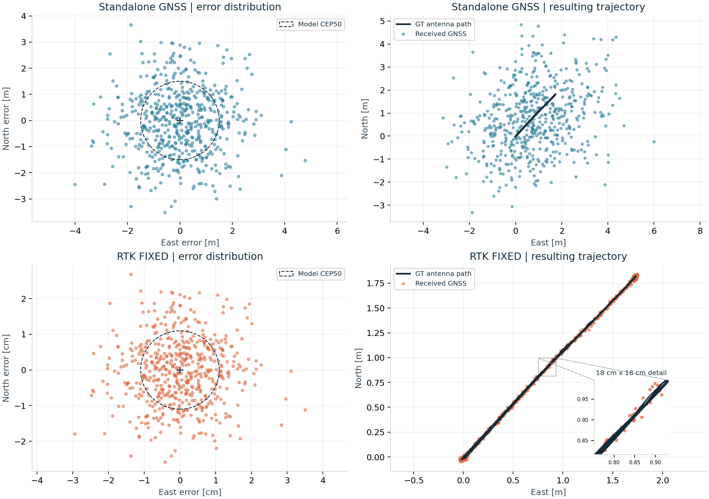
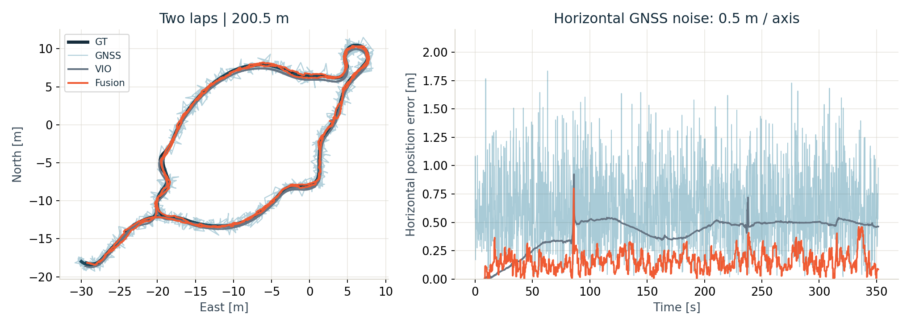
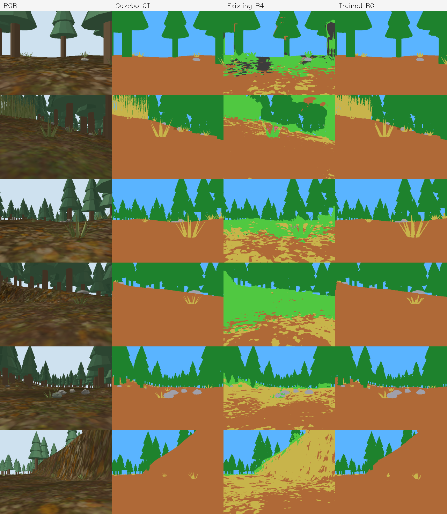
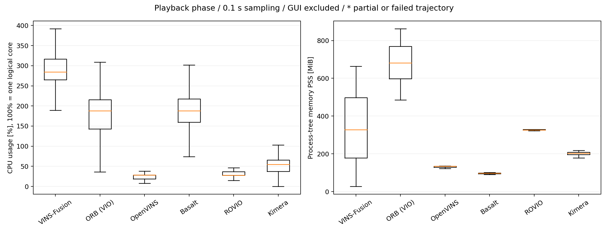

직접 설계·구현·검증
GNSS 오류 모델, VIO 어댑터, Ceres 융합기, 실패 상태 관리, 반복 실험과 시각화. 의미분할 데이터 수집·파인튜닝·추론 연동 및 인지 지도 통합.
NOMAD · OFF-ROAD AUTONOMY · 2026 — 진행 중
위치추정과 공통 시뮬레이션 통합을 담당했습니다. VIO·GNSS를 결합하는 Ceres 포즈 최적화기를 구현하고, 의미분할 모델을 Gazebo 환경에 맞게 파인튜닝했습니다. 위치추정·인지 출력은 팀원이 개발한 경로생성·제어 모듈에 연결했습니다.

CERES · GNSS–VIO FUSION
VIO의 상대 이동과 GNSS의 절대 위치가 함께 맞도록 포즈를 조정합니다. 센서별 불확실성을 잔차의 가중치로 반영하고, 큰 오차는 사전 검사와 강건 손실로 처리했습니다.
GNSS가 끊긴 뒤 VIO를 켜면 초기화와 좌표 정렬에 시간이 필요합니다. VIO를 계속 구동하며 GNSS와 결합하는 외부 융합기를 구성했습니다.
VIO의 상대 이동으로 짧은 구간의 움직임을 유지하고, GNSS로 전역 위치를 보정했습니다. 공통 어댑터로 Basalt·OpenVINS를 연결했으며, VIO에서 사용한 IMU는 외부 융합기에 중복 입력하지 않았습니다.
GNSS 오류 모델, VIO 어댑터, Ceres 융합기, 실패 상태 관리, 반복 실험과 시각화. 의미분할 데이터 수집·파인튜닝·추론 연동 및 인지 지도 통합.
팀원의 경사도 계산·GPP·LPP·제어 모듈에 위치와 지도를 연결하고, 좌표계·실행 조건을 맞췄습니다.
윈도우 안 각 시점의 IMU 위치와 자세를 함께 조정해, 상대 이동과 전역 위치 제약을 동시에 만족시킵니다. 왼쪽 위 첨자는 좌표계를 나타냅니다.

각 잔차를 σ로 나누어 무차원화한 뒤 제곱합을 최소화합니다. ρ는 Huber 손실입니다. σ로 센서의 기본 신뢰도를 표현하고, 강건 손실로 큰 잔차의 영향이 계속 제곱으로 커지는 것을 완화합니다.
전역 위치 차이를 i 좌표계로 옮겨 VIO 상대 이동과 비교합니다. 회전도 아래 관계로 같은 좌표계에 맞춘 뒤, VIO 관측 회전을 되돌려 남는 회전량을 잔차로 씁니다. {}^{i}\!R_W=({}^{W}\!R_i)^{\mathsf T},\qquad {}^{i}\!R_j={}^{i}\!R_W\,{}^{W}\!R_j
IMU–GNSS 안테나 장착 오프셋(lever arm)은 IMU에서 안테나까지의 위치 차이 벡터입니다. 이 벡터를 W 좌표계로 회전시켜 IMU 위치에 더하면 예상 안테나 위치가 됩니다. 이를 GNSS 측정과 비교해 축별 표준편차로 정규화합니다.
QuaternionManifold로 단위 회전 제약을 유지합니다.SPARSE_NORMAL_CHOLESKY로 풉니다.VIO: 상대 이동 잔차에 경험적으로 설정한 σ를 사용하며, 간격 Δt에 대해 \sigma_{ij}=\sigma_0\sqrt{\Delta t}로 설정했습니다. 현재 어댑터가 OpenVINS의 전체 공분산을 그대로 전파하는 구조는 아닙니다.
GNSS: 보고된 축별 분산의 제곱근, 설정한 최소 σ, RTK fixed 여부에 따른 최소 σ를 함께 적용합니다. 품질 플래그만으로 측정이 옳다고 판단하지 않고 시각·이동량·복구 지속시간도 검사합니다.
게이트와 강건 손실: 사전 검사에서 거부한 GNSS는 해당 포즈의 GNSS 잔차 블록을 만들지 않습니다. Huber 손실은 이미 수용한 측정의 큰 잔차를 완화하는 별도 단계입니다. VIO 실패 시에는 잘못된 상대 제약을 계속 쌓지 않도록 격리하고, 정지·재시작 상태를 상위 제어와 연결하는 구조를 두었습니다.
경계 prior: 윈도우를 벗어나는 모든 정보를 정확히 marginalize하는 구현은 아닙니다. 이전에 구한 첫 포즈를 약하게 유지하는 근사 경계 prior를 사용합니다. 최적화 실패 시에는 이전 해를 유지합니다.
잡음 없는 Gazebo 안테나 위치에 동·북 방향의 독립 가우시안 잡음을 더해, 단독 GNSS와 RTK FIXED 수준의 위치 측정을 생성했습니다.
ENU에서 오차를 더한 뒤 위도·경도로 되돌려 NavSatFix와 품질 메시지를 5 Hz로 발행합니다. 수평 정확도 사양을 잡음 크기로 환산하고, 정상 잡음과 실패 이벤트를 분리해 시험했습니다.

F9P 수평 CEP 사양을 기준으로 단독 1.5 m, RTK 0.011 m(기준선 1 km 가정)를 사용했습니다. 독립·등방 가우시안 가정에서 축별 σ = CEP / √(2 ln 2)로 환산하면 약 1.274 m·0.00934 m입니다. 원형 산포는 이 가정을 확인하는 결과이며 실제 수신기의 잡음 형태를 검증한 것은 아닙니다.
수직 추가 잡음은 0입니다. 위성 전파·반사 경로·RTK 정수 모호성 추정을 구현한 모델은 아니며, 실패 시험은 잡음 증가·바이어스·소실 등을 별도 이벤트로 주입했습니다. 아래 융합 시험의 σ = 0.5 m·0.02 m는 별도로 정한 강건성 시험 조건입니다.
2번 맵의 200.5 m·2바퀴 순환 데이터에서 Basalt 출력을 고정하고 GNSS 조건만 바꿨습니다. 평가 때 궤적 전체를 GT에 다시 맞추지 않고, 초기 변환을 고정한 ENU 좌표에서 안테나 위치를 비교했습니다.

공통 5 Hz 평가 시점 1,718개(전체의 97.2%)에서 비교한 조건별 1회 시험입니다. 초기 모사 RTK 관측과 처음 2 m 이동으로 구한 변환을 모든 조건에 고정 적용했습니다. GNSS는 GT에 수평 잡음을 더한 모사 측정입니다.
정상·GNSS 바이어스 조건에서는 작은 오차를 유지했지만, VIO 드리프트와 GNSS 저품질·바이어스가 겹친 조건에서는 수평 RMSE가 20.169 m로 증가했습니다. 복합 실패 대응은 미해결 상태입니다.
이 시험은 고정된 VIO 출력을 사용했습니다. VIO 재초기화, 실센서 동기화·보정과 Raspberry Pi 실시간성은 별도 검증이 필요합니다.
사전학습 모델이 Gazebo의 잔디·통나무를 잘못 나눠, 코스트맵에서 길을 막는 문제가 있었습니다.
Gazebo 객체 라벨을 정답 마스크로 수집하고, 카메라 위치·방향을 바꾼 1,200장으로 데이터셋을 구성했습니다. 학습 1,000장·검증 200장으로 나눠 SegFormer-B0를 직접 파인튜닝하고 ONNX로 내보내 기존 추론 노드에 연결했습니다.

동일 Gazebo 맵의 별도 검증 이미지 200장에서 측정한 결과입니다.
위치추정·인지 출력이 팀원의 경로생성·제어 모듈에 연결되도록 토픽, 좌표계와 갱신 조건을 맞췄습니다. 깊이와 의미분할 결과를 그리드 맵에 누적하고, 경사도와 장애물 비용을 플래닝 입력으로 전달해 시뮬레이션 주행을 확인했습니다.
| 연결 지점 | 통합하며 맞춘 내용 |
|---|---|
| 위치추정 → 지도·플래닝 | 공통 Odometry·TF, 좌표계와 시각, 초기정렬 완료 상태. 중복 /clock 발행과 TF 충돌을 추적했습니다. |
| 카메라 → 지도 | 깊이·카메라 보정값·차량 포즈로 의미 라벨을 3D에 사영하고, 주변 원본 점으로 계산한 경사도와 함께 그리드 맵에 기록했습니다. |
| 지도 → 경로생성 | 관측/미관측 영역, 장애물 비용·완충 영역과 초기 차량 주변 조건. 순간적인 분할 결과가 지도에 바로 고착되지 않도록 누적 갱신을 적용했습니다. |
| 경로생성 → 제어 | Hybrid A*·D* Lite와 RPP·Ackermann Rollout을 선택·실행하도록 팀 구현의 입력·실패 상태를 연결했습니다. |
담당 구분: 경로생성과 경사도 추정 알고리즘은 팀원이 개발했습니다. 저는 위치추정·인지 출력과의 연결 및 시뮬레이션 통합을 담당했습니다.
VINS-Fusion·ORB-SLAM3·OpenVINS·Basalt·ROVIO·Kimera-VIO를 구동하고, 같은 rosbag으로 궤적과 CPU·메모리 사용량을 비교하는 실행·수집·시각화를 자동화했습니다. 직진·후진 복귀·유턴 복귀·순환 주행을 나눠 시점 변화에 따른 차이를 확인했습니다.

실험명으로 입력과 결과가 묶이도록 폴더 구조를 정리하고, GUI에서 모듈별 실행·설정·선택적 로그 기록을 지원했습니다. 위치추정 평가의 스케일 보정 여부와 시간 커버리지, 프로세스 트리 기준 자원 사용량을 함께 기록했습니다.